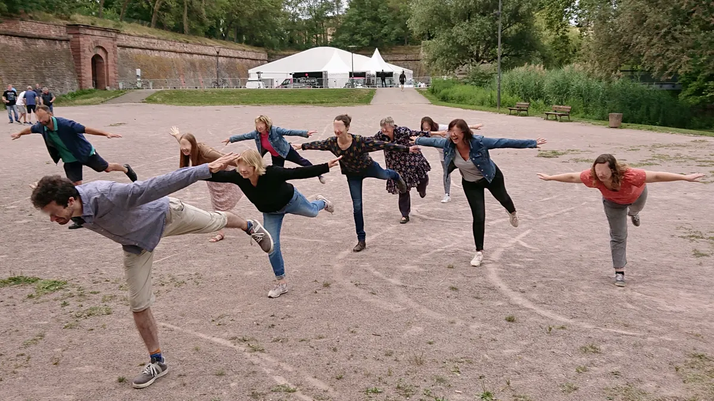

Atelier 1Cohésion
Ateliers de cohésion
Livrer à ses partenaires de jeu une part de soi en imaginant ensemble des histoires incite à faire preuve du respect et de la compréhension qu’on attend d’eux. C’est l’installation d’une réelle bienveillance.
En partageant cette activité agréable et stimulante, les stagiaires qui ne se connaissaient pas brisent la glace facilement. Ceux qui se connaissaient se rapprochent. La complicité naît ou se renforce.